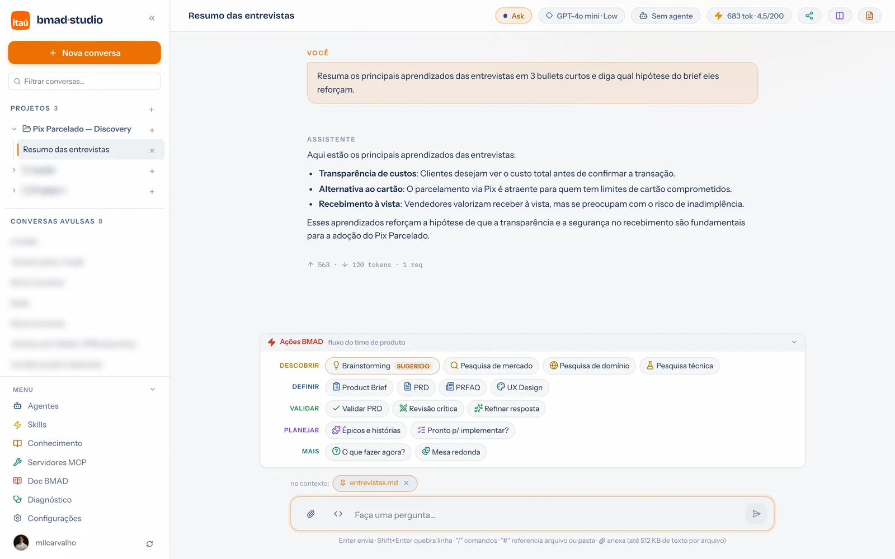
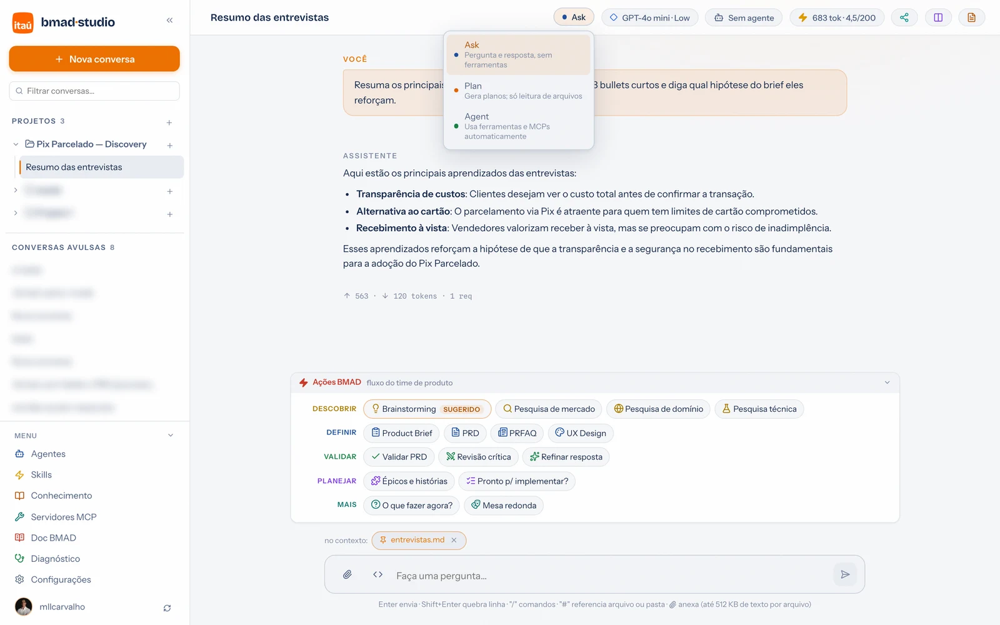

Guia de uso · 02
Conversas, modos e modelos
A tela de conversa concentra tudo: o que o assistente pode fazer (modo), com qual modelo, encarnando qual agente, lendo quais arquivos — e quanto isso custa da sua cota.
A anatomia da tela

- Barra superior: título, modo (Ask/Plan/Agent), modelo (com a faixa de custo), agente ativo, consumo da conversa (tokens · AI credits restantes da licença), compartilhar, preview e o painel de Arquivos.
- Cada resposta mostra os próprios números: tokens de entrada/saída e requisições. Transparência para escolher melhor o modelo da próxima.
- Ações BMAD: os workflows do método organizados por fase, com o próximo passo sugerido — um clique já seleciona a persona certa. Detalhes em BMAD Method.
- no contexto: chips dos arquivos fixados — entram em toda mensagem desta conversa (veja Arquivos).
- Composer: Enter envia · Shift+Enter quebra linha ·
/comandos ·#arquivos · 📎 anexos avulsos (até 512 KB de texto por arquivo).
Os três modos

| Modo | O que pode | Use para |
|---|---|---|
| Ask | Só conversa — nenhuma ferramenta. | Dúvidas, resumos, revisão de texto. O mais barato e previsível. |
| Plan | Lê arquivos do projeto, não altera nada. | Diagnósticos e planos: "o que você faria?" antes de deixar fazer. |
| Agent | Ferramentas liberadas: cria/edita arquivos, roda comandos, chama MCPs — em rodadas, até concluir. | Gerar documentos, mexer nos arquivos do projeto, consultar sistemas via MCP. |
Modelos e créditos
- O seletor de modelos lista os modelos do Copilot da sua licença, cada um com a faixa de custo. Modelos premium descontam AI credits por requisição (o multiplicador aparece na lista).
- A pílula de consumo mostra os credits restantes — medidos direto na licença, saldo antes − depois de cada resposta.
- A escolha vale por conversa: rascunho num modelo barato, versão final num premium.
Editar, regenerar e conversar em paralelo
- Editar uma mensagem sua (menu da mensagem) reescreve a pergunta e regenera dali para frente; regenerar repete a resposta com o contexto atual (bom após trocar modelo/modo).
- Parar interrompe a geração; o que já veio fica na conversa.
- Conversas em paralelo: pode abrir outra conversa enquanto uma responde — o spinner na sidebar mostra quem está gerando.
- Fechou o navegador no meio? A geração continua no servidor local; ao reabrir, o stream reconecta e retoma de onde estava.
- Título automático: a conversa se batiza na primeira resposta; renomeie pelo menu do item na sidebar.
Checkpoints: desfazer o que o agente fez
No modo Agent, antes de toda escrita, edição ou remoção de arquivo o portal tira um snapshot. O card da ferramenta na conversa ganha o botão Reverter — um clique restaura o estado anterior àquela operação. Errou o pedido? Reverta, refine o prompt e mande de novo, sem medo de deixar o agente trabalhar.
Exportar e enviar por e-mail
O ícone de compartilhar na barra superior abre duas opções:
- Exportar conversa (.md) — baixa a conversa inteira em Markdown legível, boa para colar em wiki ou anexar em card.
- Enviar por e-mail — abre seu cliente de e-mail com o arquivo já anexado. Sem cliente com anexo automático? O portal salva o arquivo e abre a pasta para você anexar à mão.